Evaluarea alternativelor și alegerea strategică
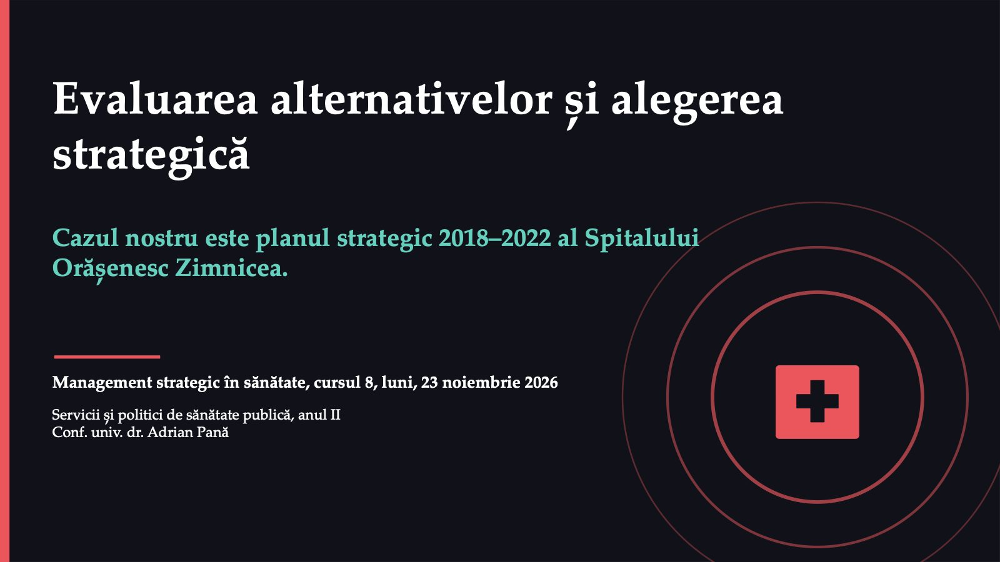
1 / 47Azi continuăm cu același spital. Săptămâna trecută ați spus ce ar putea face. Azi hotărâm după ce criterii spunem că o variantă merită aleasă înaintea alteia.
?
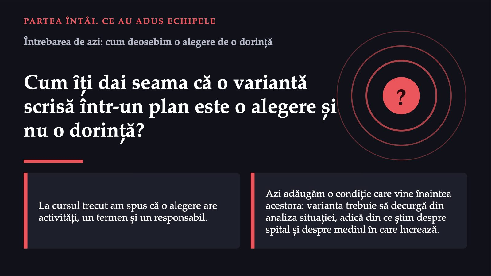
2 / 47Aceasta este întrebarea la care ne întoarcem la sfârșit. Dacă analiza spune un lucru și planul alege altceva, una dintre ele a fost scrisă degeaba.
Ședința are patru părți
![PARTEA ÎNTÂI. CE AU ADUS ECHIPELE Ședința are patru părți Întâi vedem ce au adus echipele: peretele Padlet, partea rămasă din cursul trecut și tabelul de la lucrarea practică LP04. Nimic din această parte nu se notează. Apoi trecem de la listă la alegere: cinci întrebări puse fiecărei variante, limitele analizei SWOT (punctele tari și slabe ale spitalului, oportunitățile și amenințările din afara lui) și matricea extern–intern. În partea a treia trecem variantele voastre, la tablă, prin lista de verificare, prin cinci criterii și prin matrice. Părerea vi-o spuneți pe telefon, individual și anonim; pe echipe nu scrieți nimic în sală. La sfârșit strângem ce a rămas pe tablă într-o hartă și o punem alături de planul spitalului. Padlet Mentimeter padlet.com, fără cont menti.com · 2311 4213](diapozitive/C08/003.jpg) 3 / 47
3 / 47Prima parte este a voastră: ce ați pus pe perete și ce ați lucrat la seminar. Apoi evaluarea o conduc eu, la tablă, pe variantele aduse de voi. Pe telefon vă spuneți părerea; nu se acordă puncte și nu există răspunsuri corecte.
De unde pornim: de la o listă de variante la o alegere
![PARTEA ÎNTÂI. CE AU ADUS ECHIPELE De unde pornim: de la o listă de variante la o alegere Cursul trecut s-a oprit la o listă: familiile de alternative strategice, adică tipurile mari de drumuri pe care le poate lua o organizație, și cele patru variante scrise de spital în 2018. Fiecare echipă a ales o variantă pe care o păstrează, una la care renunță și una pe care o adaugă. Săptămâna trecută ne-am întrebat ce ar putea face spitalul. Azi ne întrebăm după ce criterii spunem că o variantă merită aleasă înaintea alteia.](diapozitive/C08/004.jpg) 4 / 47
4 / 47Întrebarea se schimbă. De la ce ar putea face spitalul trecem la felul în care alegem între variante. Fișa disciplinei numește pasul acesta evaluarea alternativelor și alegerea strategică.
Reamintim cele patru variante scrise de spital în 2018
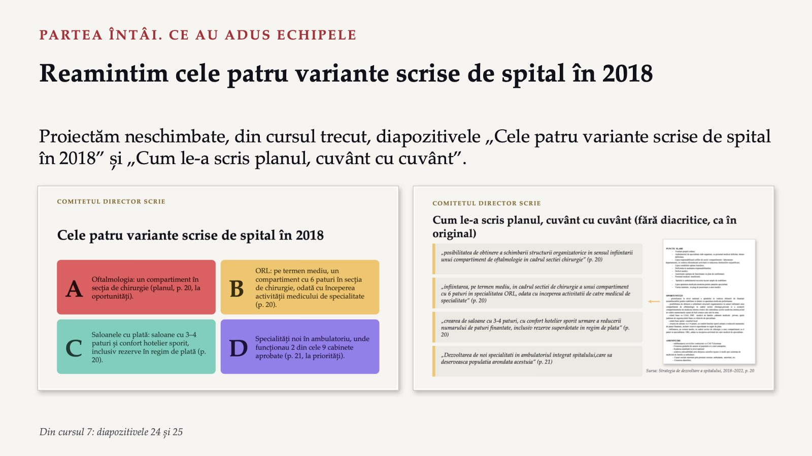
5 / 47Reamintim cele patru variante, așa cum le-a scris planul: un compartiment de oftalmologie în secția de chirurgie, un compartiment de otorinolaringologie (ORL) cu 6 paturi, saloane cu 3–4 paturi și confort hotelier sporit, inclusiv rezerve în regim de plată, și specialități noi în ambulatoriul integrat, care avea 9 cabinete aprobate și numai 2 în funcțiune. Trei dintre ele sunt trecute în plan la oportunități, iar a patra, la priorități. Rețineți acest amănunt; revenim la el.
Peretele comun cu secțiunile de plan ale echipelor
![PARTEA ÎNTÂI. CE AU ADUS ECHIPELE Peretele comun cu secțiunile de plan ale echipelor Fiecare echipă a scris ce păstrează, la ce renunță și ce adaugă, fiecare cu un rând de argument și cu o cifră din fișa spitalului. Secțiunile sunt grupate după varianta păstrată. Gruparea arată cum s-au împărțit echipele și unde argumentele seamănă între ele. Nu este un clasament. A B C D [ … câte echipe au păstrat fiecare variantă: se citește de pe perete luni, după termenul de duminică seara ] Padlet padlet.com, fără cont](diapozitive/C08/006.jpg) 6 / 47
6 / 47Pe perete este secțiunea fiecărei echipe. Le citim împreună, grupate după varianta păstrată. Două sau trei echipe își citesc rândul de argument. Nu alegem o echipă câștigătoare.
Cum ascultăm o echipă: ce are o secțiune bună
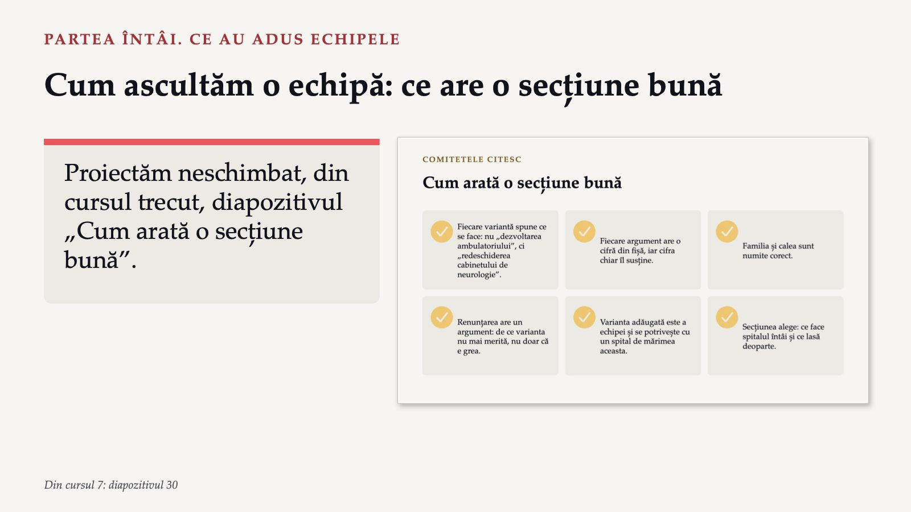
7 / 47Când ascultați o echipă, urmăriți aceleași lucruri ca săptămâna trecută: varianta spune ce se face, argumentul are o cifră care chiar îl susține, renunțarea are un motiv, iar secțiunea alege ce face spitalul întâi.
Variantele adăugate de echipe trec prin aceleași trei întrebări
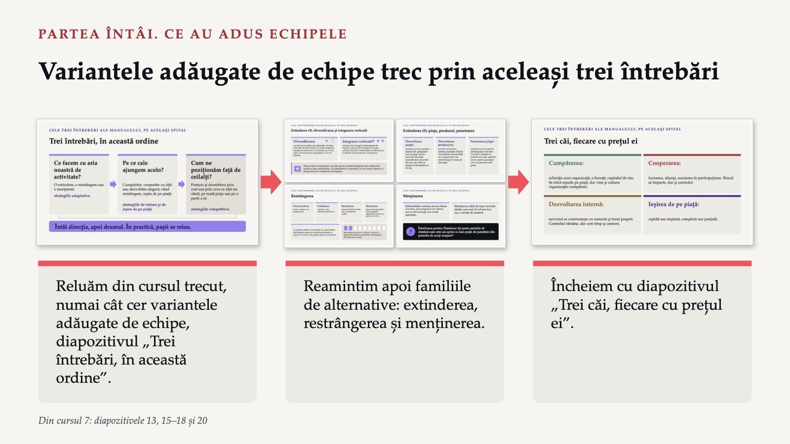
8 / 47Pentru variantele pe care le-ați adăugat voi, punem aceleași trei întrebări de săptămâna trecută: ce face spitalul cu aria lui de activitate, pe ce cale și cum se poziționează. Numim familia și calea fiecărei variante adăugate.
Tabelul de la lucrarea practică LP04 spune ce știm despre spital
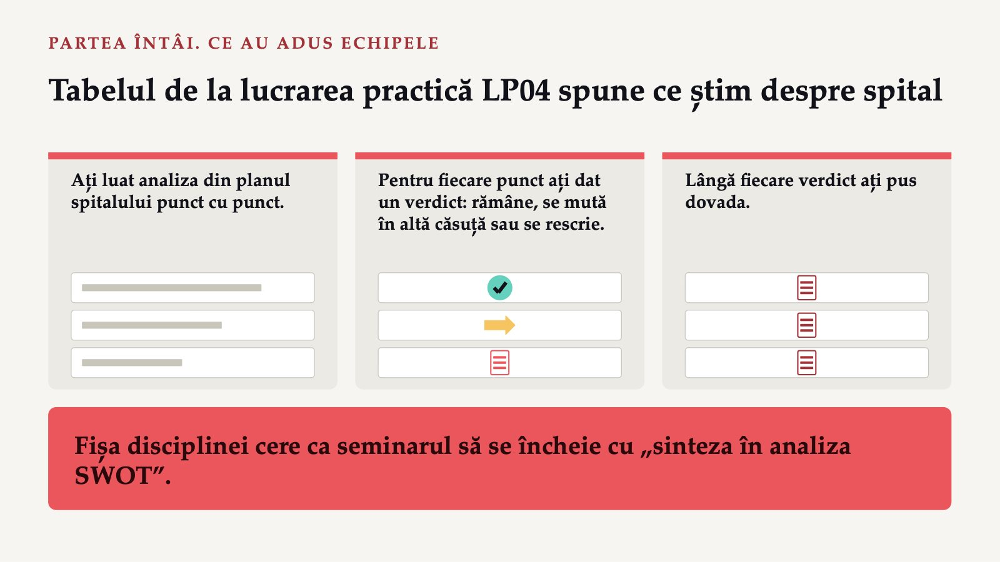
9 / 47A doua temă este tabelul de la seminar. Câteva echipe își arată tabelul și spun ce punct le-a dat cel mai mult de lucru. Tabelul nu se predă azi; produsul notat al lucrării practice are termenul lui, duminică, 29 noiembrie.
Unde nu sunt echipele de acord: indicăm pe pagina planului
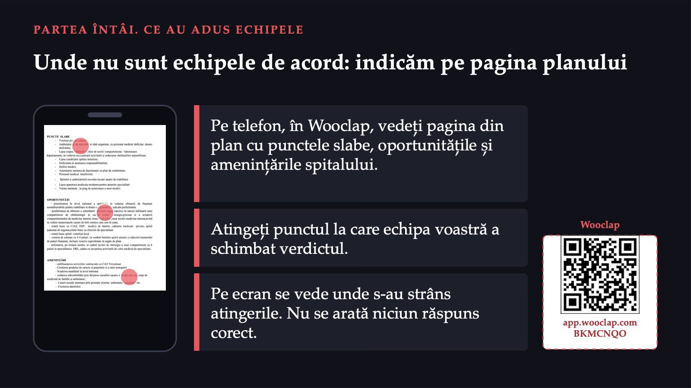
10 / 47Aveți pe telefon pagina reală a planului. Atingeți punctul la care echipa voastră a hotărât că se mută sau se rescrie. Ne uităm apoi unde s-au strâns atingerile și unde echipele nu sunt de aceeași părere.
Pe tablă desenăm cele patru căsuțe ale spitalului
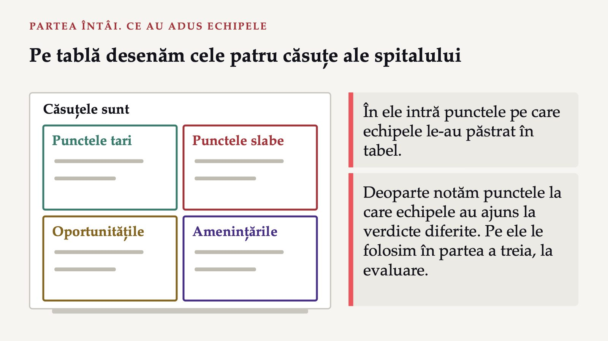
11 / 47Scriu pe tablă punctele pe care le-ați păstrat și, deoparte, pe cele la care nu v-ați înțeles între echipe. Pe acestea le folosim când evaluăm variantele.
Cele două teme se leagă printr-o singură regulă
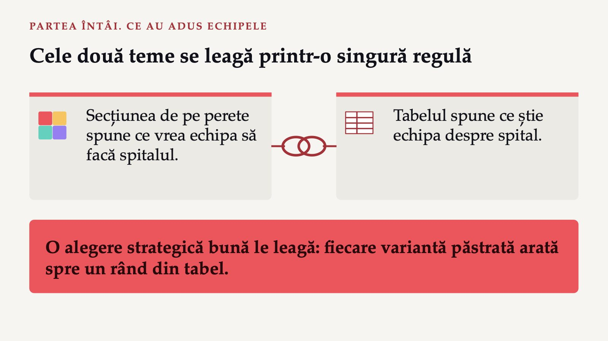
12 / 47Aceasta este legătura pe care o căutăm tot restul ședinței. Uitați-vă la varianta păstrată de echipa voastră și întrebați-vă spre ce rând din tabel arată.
A greșit una dintre echipe?
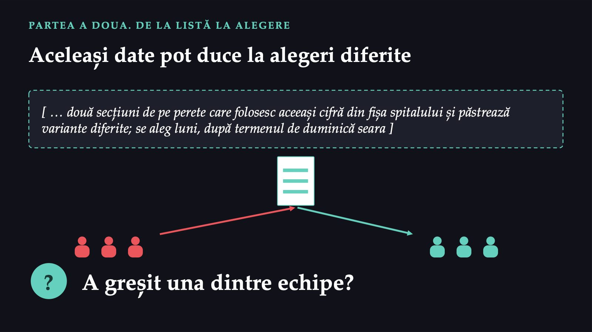
13 / 47Două echipe au pornit de la aceeași cifră și au ajuns la alegeri diferite. Niciuna nu a greșit la calcul. Același set de date poate susține ambele părți ale unei dispute.
„
![PARTEA A DOUA. DE LA LISTĂ LA ALEGERE O decizie strategică este o judecată argumentată Manualul (Ginter, Duncan și Swayne, capitolul 7) spune că alegerile strategice sunt, în esență, judecăți: opinii întemeiate despre ce înseamnă datele. Judecata se îmbunătățește când datele sunt așezate astfel încât să li se vadă înțelesul, în tabele și în hărți de gândire strategică. „ Manualul îl citează pe Peter Drucker, autor clasic al managementului: o decizie este o alegere între alternative și rareori o alegere între corect și greșit. Un argument bun spune pe ce date se sprijină, ce presupune și ce lasă deoparte.](diapozitive/C08/014.jpg) 14 / 47
14 / 47Manualul nu spune că analiza ar fi inutilă. Spune că instrumentele rânduiesc gândirea celui care decide, dar nu dau răspunsuri. De aceea, la întrebările de azi nu există un singur răspuns bun; există răspunsuri mai bine sau mai slab argumentate.
Alegerea strategică se face în cinci pași
![PARTEA A DOUA. DE LA LISTĂ LA ALEGERE Alegerea strategică se face în cinci pași 1 Primul pas leagă strategia de analiza situației. 2 Al doilea alege strategia adaptativă, adică dacă organizația crește, se restrânge sau rămâne cam la fel. 3 Al treilea pas alege calea de intrare sau de ieșire de pe piață, de pildă prin forțe proprii sau prin asociere cu alții. 4 Al patrulea pas alege strategia competitivă, adică felul în care organizația se deosebește de ceilalți furnizori de servicii. 5 Al cincilea pas strânge toate alegerile într-o hartă a strategiei. Azi lucrăm mai ales cu primul, al doilea și al cincilea pas.](diapozitive/C08/015.jpg) 15 / 47
15 / 47Ordinea o știți de la cursul trecut. Atunci ați folosit-o ca să identificați variante. Acum o parcurgeți a doua oară, ca să alegeți. Întâi se hotărăște dacă organizația crește, se restrânge sau rămâne cam la fel; abia apoi, prin ce metode.
Punem la probă o variantă din 2018: specialitățile noi din ambulatoriu
![PARTEA A DOUA. DE LA LISTĂ LA ALEGERE Punem la probă o variantă din 2018: specialitățile noi din ambulatoriu Ambulatoriul integrat este partea spitalului în care pacienții sunt consultați fără să fie internați. Varianta trece prin cinci întrebări. Întrebarea · „da” sau „nu” · Locul din analiză Răspunde unei probleme din mediul extern? · ☐ Folosește un avantaj competitiv, adică ceva ce spitalul are sau face mai bine decât alții, ori repară un dezavantaj competitiv? · ☐ Se potrivește cu misiunea (de ce există spitalul) și cu valorile? · ☐ Apropie spitalul de viziune (ce vrea să devină)? · ☐ Atinge un obiectiv strategic? · ☐ La fiecare întrebare scriem „da” sau „nu” și locul din analiză care susține răspunsul.](diapozitive/C08/016.jpg) 16 / 47
16 / 47Luăm a patra variantă a spitalului și o trecem prin cinci întrebări, numai cu ce scrie planul. Nu dăm un verdict. Arătăm cum se caută dovada.
Prima întrebare: varianta răspunde unei probleme din afara spitalului?
![PARTEA A DOUA. DE LA LISTĂ LA ALEGERE Prima întrebare: varianta răspunde unei probleme din afara spitalului? Sursa: Strategia de dezvoltare a spitalului, 2018–2022, p. 20 și 21 La amenințări, planul trece scăderea adresabilității spitalului, adică a numărului de pacienți care vin la el, prin îndreptarea cazurilor ușoare și medii spre medicina de familie și spre ambulatoriu. Un spital care își întărește ambulatoriul merge în aceeași direcție cu această schimbare. Răspunsul este „da”, iar în căsuță scriem locul din analiza externă.](diapozitive/C08/017.jpg) 17 / 47
17 / 47Există un loc din analiza externă spre care varianta poate arăta. Îl scriem în căsuță împreună cu răspunsul.
A doua întrebare: varianta folosește un avantaj sau repară un dezavantaj?
![PARTEA A DOUA. DE LA LISTĂ LA ALEGERE A doua întrebare: varianta folosește un avantaj sau repară un dezavantaj? Sursa: Strategia de dezvoltare a spitalului, 2018–2022, p. 20 La puncte slabe, planul trece ambulatoriul de specialitate slab organizat, cu personal medical deficitar și dotare deficitară, și deficitul de medici. Varianta ar repara deci un dezavantaj. Aceeași listă arată însă și piedica: specialitățile noi cer medici, iar spitalul scrie că nu îi are. Răspunsul este „da, cu o condiție”, iar condiția se scrie în căsuță. ?](diapozitive/C08/018.jpg) 18 / 47
18 / 47Răspunsul cinstit este un da cu o condiție. Dacă nu scriem condiția, am completat căsuța din amintire.
A treia și a patra întrebare: misiunea, valorile și viziunea nu deosebesc variantele
![PARTEA A DOUA. DE LA LISTĂ LA ALEGERE A treia și a patra întrebare: misiunea, valorile și viziunea nu deosebesc variantele Sursa: Strategia de dezvoltare a spitalului, 2018–2022, p. 2 Viziunea spitalului este îmbunătățirea calității actului medical și diversificarea serviciilor oferite populației. Misiunea este „furnizarea de servicii medicale de cea mai bună calitate”. Dintre valori: „Plasarea pacientului în centrul atenției medicale”, „Garantarea calității și a siguranței actului medical”, „Accesul ușor la serviciile medicale oferite”. Specialitățile noi se potrivesc, dar aproape orice variantă a unui spital s-ar potrivi. O misiune foarte largă nu respinge nimic și, de aceea, nu ajută la alegere.](diapozitive/C08/019.jpg) 19 / 47
19 / 47Aici avem două răspunsuri da, dar ele nu deosebesc varianta aceasta de celelalte trei. Când nicio variantă nu pică la întrebarea despre misiune, alegerea se face la celelalte întrebări.
A cincea întrebare: varianta atinge un obiectiv strategic?
![PARTEA A DOUA. DE LA LISTĂ LA ALEGERE A cincea întrebare: varianta atinge un obiectiv strategic? Sursa: Strategia de dezvoltare a spitalului, 2018–2022, p. 27 Obiectivul strategic II al planului este dezvoltarea serviciilor și a condițiilor oferite. Prima lui activitate este încheierea anuală a contractului pentru serviciile din ambulatoriu. Indicatorul obiectivului este „număr servicii contractate și specialități medicale”. Indicatorul numără specialitățile, dar activitatea nu spune că se deschid unele noi. Răspunsul este „da”, dar numai pe jumătate.](diapozitive/C08/020.jpg) 20 / 47
20 / 47Varianta atinge obiectivul numai pe jumătate. Rămâne de aflat ce anume a vrut spitalul să contracteze.
Rândul completat arată unde mai trebuie căutat
 21 / 47
21 / 47O variantă care nu primește da în fiecare coloană nu este respinsă pe loc. Se cercetează și se justifică suplimentar. Același drum îl faceți, peste câteva minute, pentru variantele voastre.
criteriile de validare
![PARTEA A DOUA. DE LA LISTĂ LA ALEGERE Primul termen nou: criteriile de validare Criteriile de validare sunt întrebările prin care verificăm dacă o alternativă strategică decurge din analiza situației și din strategiile direcționale, adică din misiune, viziune, valori și obiective. Lista de verificare a manualului are cinci astfel de întrebări: 1 problema din mediul extern, 2 avantajul competitiv folosit sau dezavantajul competitiv reparat, 3 misiunea și valorile, 4 viziunea, 5 obiectivele strategice. Spus simplu, este proba că varianta nu a fost scrisă pe lângă analiză.](diapozitive/C08/022.jpg) 22 / 47
22 / 47Ce am făcut adineauri are un nume. Manualul spune că încheierile analizei trebuie să conducă alegerea alternativelor, iar lista de verificare este proba finală a acestei legături.
Încă cinci criterii, din prezentarea din 2025: merită făcută varianta și se poate face?
![PARTEA A DOUA. DE LA LISTĂ LA ALEGERE Încă cinci criterii, din prezentarea din 2025: merită făcută varianta și se poate face? Atractivitatea sau relevanța: varianta răspunde unei nevoi reale de sănătate și unui context favorabil? Fezabilitatea: există resurse, timp și capacitate de conducere ca să fie dusă la capăt? Acceptabilitatea: o primesc bine pacienții, profesioniștii, autoritățile locale, casa de asigurări de sănătate, ministerul și comunitatea? Impactul asupra performanței și echității: ce schimbă în acces, calitate, costuri și rezultate de sănătate, și pentru cine? ? Riscul și incertitudinea: ce ipoteză poate să nu se confirme și ce urmează atunci? Lista manualului întreabă dacă varianta decurge din analiză. Aceste criterii întreabă dacă merită făcută, dacă se poate face, cine o primește bine, pe cine ajută și ce se pierde dacă nu reușește.](diapozitive/C08/023.jpg) 23 / 47
23 / 47Acestea sunt criteriile din prezentarea mea din 2025. Acum numai le numim. Le folosim la tablă, pe variantele voastre, după lista manualului.
Ce stă în căsuța oportunităților din planul spitalului
![PARTEA A DOUA. DE LA LISTĂ LA ALEGERE Ce stă în căsuța oportunităților din planul spitalului Sursa: Strategia de dezvoltare a spitalului, 2018–2022, p. 20 Planul trece la oportunități înființarea unui compartiment de oftalmologie, crearea de saloane cu 3–4 paturi și înființarea unui compartiment de otorinolaringologie (ORL) cu 6 paturi. Un compartiment este o unitate cu paturi mai mică decât o secție. Sunt acestea evenimente din afara spitalului sau lucruri pe care le-ar face spitalul? După manual, o oportunitate adevărată este un eveniment din mediul extern pe care nu îl controlează nimeni. 3–4 6](diapozitive/C08/024.jpg) 24 / 47
24 / 47Toate trei sunt, în miezul lor, lucruri pe care le-ar face spitalul. Planul pomenește și ce ar trebui să se întâmple în afară: schimbarea de structură, reducerea numărului de paturi finanțate, începerea activității medicului de specialitate. Le scrie însă în aceeași frază cu acțiunea și nu spune cât de probabil este fiecare. O variantă trecută la oportunități pare deja susținută de analiză, deși nu am găsit în plan locul în care să fi fost evaluată.
Același lucru apare în două căsuțe care se contrazic
![PARTEA A DOUA. DE LA LISTĂ LA ALEGERE Același lucru apare în două căsuțe care se contrazic Sursa: Strategia de dezvoltare a spitalului, 2018–2022, p. 19 și 20 La puncte tari, planul trece condiții hoteliere de bună calitate în toate secțiile, adică saloane bine dotate. La puncte slabe trece lipsa condițiilor optime hoteliere. Amândouă nu pot fi adevărate în același fel. Și invers: îndreptarea cazurilor ușoare și medii spre ambulatoriu stă într-o singură căsuță, la amenințări. Pentru paturile spitalului este o amenințare, dar pentru ambulatoriul aceluiași spital ar putea fi o oportunitate.](diapozitive/C08/025.jpg) 25 / 47
25 / 47O listă neierarhizată și neverificată lasă asemenea nepotriviri să treacă. Lista punctelor slabe pune pe același rând veniturile proprii reduse, lipsa aparaturii moderne și vârsta înaintată a unor medici, fără să spună care dintre ele hotărăște soarta spitalului.
Unde se oprește analiza SWOT, după manual
![PARTEA A DOUA. DE LA LISTĂ LA ALEGERE Unde se oprește analiza SWOT, după manual Se face ușor, dar spune puțin despre strategiile care ar decurge din liste. Oportunitățile sunt înfățișate adesea ca alternative strategice, iar același factor extern poate fi și oportunitate, și amenințare. Încadrarea este adesea arbitrară. Analiza nu ierarhizează punctele tari și slabe după cât contează ele în fața concurenților. De aceea se folosește numai ca primă imagine a situației sau ca temelie pentru o analiză mai adâncă.](diapozitive/C08/026.jpg) 26 / 47
26 / 47Critica nu este nouă și nu s-a stins. Un articol metodologic din 2026 propune ca factorii, odată adunați, să primească o importanță, prin note sau ponderi. Un spital universitar din Nigeria și-a ierarhizat punctele cu ajutorul a 109 angajați. Pentru planul echipei voastre: pe lângă listă, spuneți care sunt cele două sau trei puncte care contează cel mai mult și de ce.
45 km
![PARTEA A DOUA. DE LA LISTĂ LA ALEGERE Punem două puncte din plan unul lângă altul și vedem ce strategie sugerează 45 km Așezarea spitalului, cu cel mai apropiat spital județean la 45 km, este un punct tare. Cazurile ușoare și medii se îndreaptă spre ambulatoriu, o schimbare din sistemul de sănătate. Împreună sugerează întărirea ambulatoriului. Deficitul de medici este un punct slab și stă pe aceeași coloană cu tendința de plecare a medicilor. Din ele nu iese o extindere, ci o strategie de reparare: spitalul trebuie mai întâi să aducă și să păstreze medici. Este o citire posibilă, nu singura, și o puteți contesta. Sursa: Strategia de dezvoltare a spitalului, 2018–2022](diapozitive/C08/027.jpg) 27 / 47
27 / 47În loc să înșirăm punctele, le potrivim. După manual, așezarea este genul de punct tare pe care nimeni nu îl poate copia întocmai; o socotim un avantaj pe termen lung. Pentru oamenii din zonă, drumul până la alt ambulatoriu de spital este lung.
matricea extern–intern
![PARTEA A DOUA. DE LA LISTĂ LA ALEGERE Al doilea termen nou: matricea extern–intern Matricea este un tabel care pune față în față problemele din afara organizației și avantajele sau dezavantajele ei interne. În fiecare căsuță se scriu alternativele sugerate de întâlnirea dintre un rând și o coloană. Avantajele pe termen lung sunt valoroase, rare, greu de copiat și durabile; din ele ies principalele strategii adaptative. Dezavantajele pe termen lung cer strategii de reparare. Pe coloane stau problemele externe: mediul general, sistemul de sănătate, aria de servicii și concurenții. Pe rânduri stau avantajele și dezavantajele, pe termen lung și pe termen scurt.](diapozitive/C08/028.jpg) 28 / 47
28 / 47Matricea a fost gândită tocmai pentru a trece de limitele listei. Avantajele pe termen scurt pot fi copiate curând și trebuie păstrate cât se poate. Dezavantajele pe termen scurt pot fi îndreptate, dar rămân o piedică serioasă.
Matricea arată ce lista nu arăta: ordinea
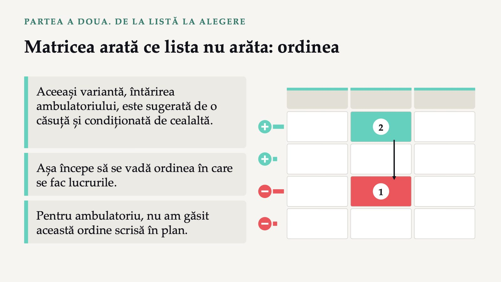
29 / 47Aceasta este diferența dintre o listă și o matrice. Lista spune ce există. Matricea spune ce se face întâi.
Evaluarea la tablă are o singură regulă: fiecare răspuns își arată dovada
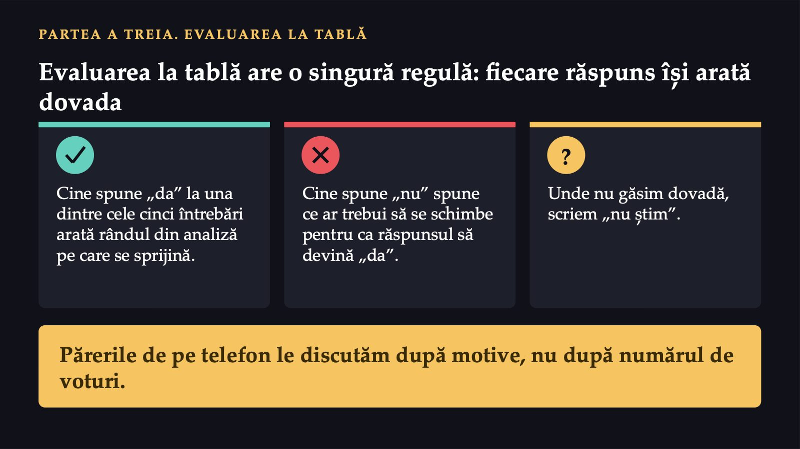
30 / 47Luăm pe rând două sau trei variante de pe perete, dintre cele mai des păstrate și cele mai des abandonate. Aveți în față planul spitalului și tabelul echipei. O variantă susținută de multe voturi și de niciun rând din analiză rămâne o dorință.
Prima variantă evaluată: cea mai des păstrată de echipe
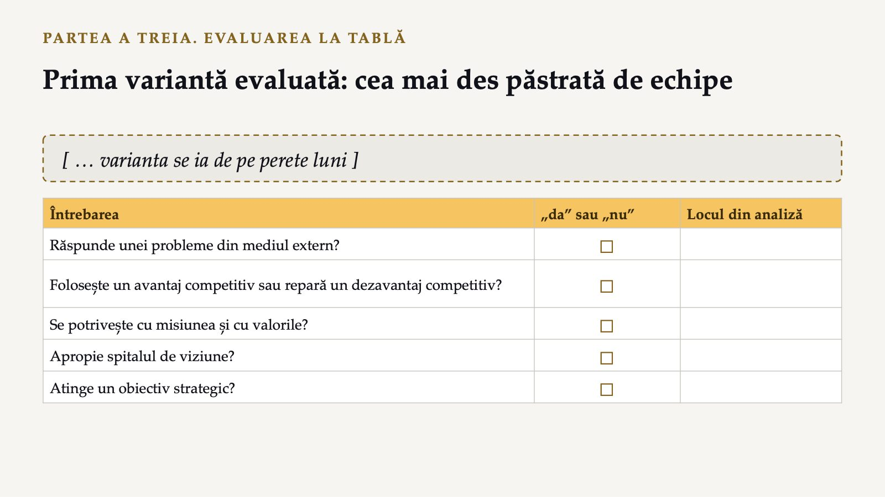
31 / 47La fiecare întrebare, cine răspunde arată locul din plan sau din tabelul echipei. Scriu în căsuță răspunsul și locul.
Părerea voastră, pe Mentimeter: unde se împiedică varianta
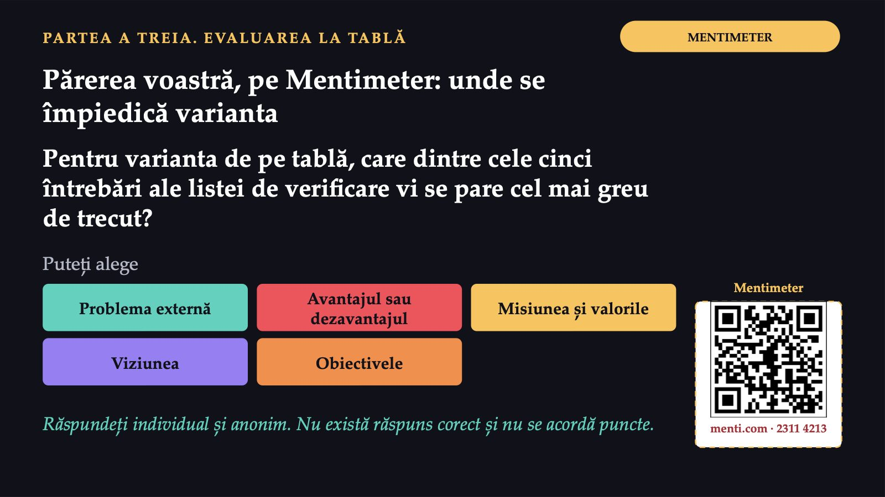
32 / 47Spuneți-vă părerea pe telefon. Apoi ne uităm la motive: de ce tocmai acea întrebare.
Aceeași variantă, trecută prin cele cinci criterii din 2025
 33 / 47
33 / 47Lista manualului ne-a spus dacă varianta decurge din analiză. Acum întrebăm dacă merită făcută, dacă se poate face, cine o primește bine, pe cine ajută și ce se pierde dacă nu reușește.
Aceeași variantă, așezată în matrice și împreună cu calea ei
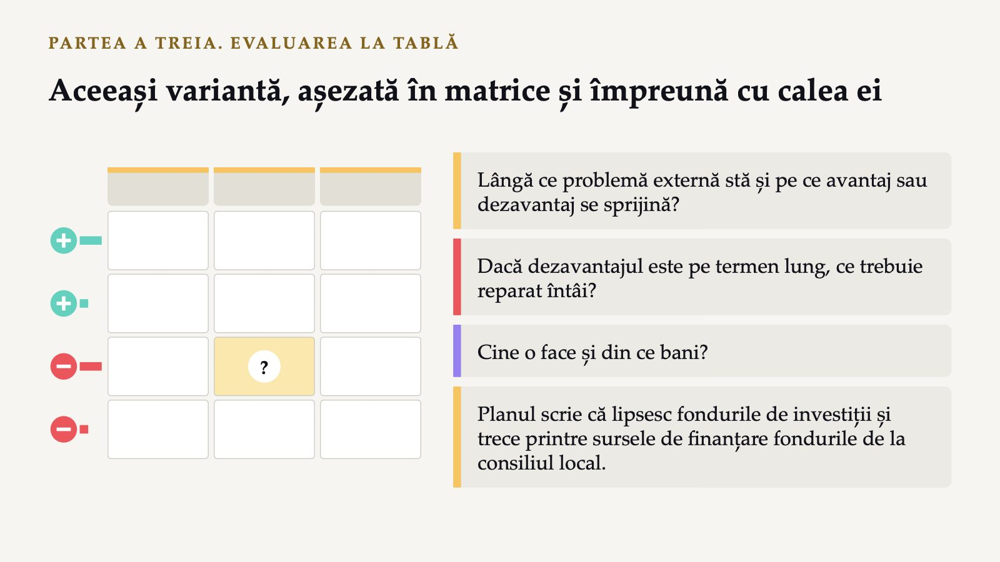
34 / 47Pentru o variantă care cere investiții, dezvoltarea prin forțe proprii înseamnă, de fapt, dezvoltare împreună cu primăria sau cu un finanțator din afară. O variantă evaluată fără calea ei este evaluată pe jumătate.
A doua variantă evaluată: cea mai des abandonată
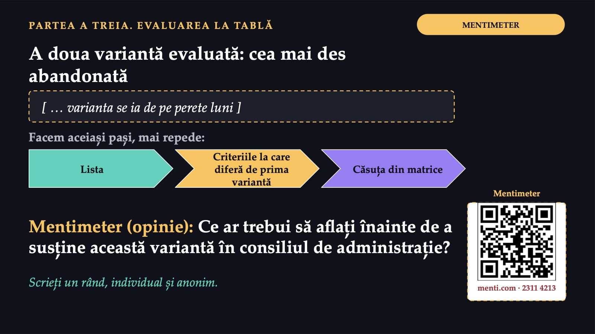
35 / 47Pentru varianta la care cele mai multe echipe au renunțat, întrebarea folositoare este ce ne lipsește ca să o judecăm. Scrieți un rând pe telefon.
Pentru un spital public contează două judecăți: nevoia comunității și capacitatea spitalului
![PARTEA A TREIA. EVALUAREA LA TABLĂ Pentru un spital public contează două judecăți: nevoia comunității și capacitatea spitalului Capacitatea: planul lega compartimentul de începerea activității medicului de specialitate. În noiembrie 2026, pagina de chirurgie a spitalului afișa un medic primar ORL, dar un medic afișat nu înseamnă încă un compartiment cu paturi. Nevoia: nu am găsit în plan nicio cifră despre bolnavii din zonă care au nevoie de ORL și despre locul unde merg ei azi. ? Una dintre cele două judecăți rămâne fără date. Un comitet director cinstit, adică echipa care conduce spitalul, ar scrie tocmai acest lucru.](diapozitive/C08/036.jpg) 36 / 47
36 / 47Organizațiile publice folosesc o metodă numită evaluarea programelor. Ea pune față în față nevoia comunității și capacitatea organizației. Când amândouă sunt mari, se recomandă o strategie de extindere. Aici, despre nevoie nu avem date.
Momentul alegerii: ce variantă ați trece prima în plan
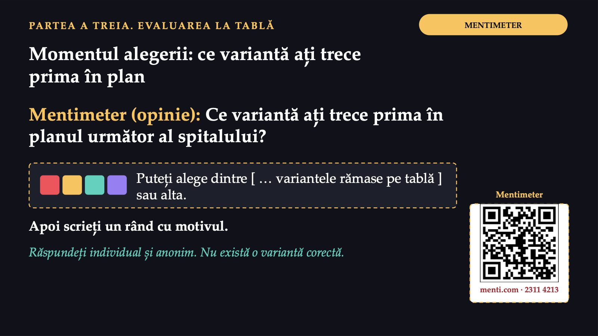
37 / 47Acum fiecare alege. Ne uităm la motive, nu la numărul de voturi. Un motiv bun spune spre ce rând din analiză arată varianta și ce condiție are.
Ce a rămas pe tablă strângem într-o hartă cu trei coloane
 38 / 47
38 / 47Tabla s-a umplut în patru locuri: rândurile listei, cele cinci criterii, câteva căsuțe ale matricei și, acum, harta. Căutați coloana goală.
harta strategiei
![PARTEA A PATRA. HARTA ȘI ÎNCHEIEREA Al treilea termen nou: harta strategiei Harta strategiei este o schemă simplă, care se cuprinde dintr-o privire și arată împreună toate alegerile strategice: Strategia adaptativă Calea de intrare sau de ieșire de pe piață Postura Poziționarea Sfatul manualului: o hartă simplă este mai bună. Postura spune cum se poartă organizația față de schimbare, iar poziționarea, cum vrea să fie văzută față de ceilalți. Harta servește la verificarea potrivirii dintre alegeri și la comunicarea strategiei. Exemplul manualului este o organizație de îngrijire pe termen lung. A ales o alianță cu un spital din apropiere, ca să primească statornic pacienți trimiși (integrare verticală), dezvoltarea pieței și a produsului, o postură de analizator și diferențierea prin calitate, nivelul serviciilor și grijă.](diapozitive/C08/039.jpg) 39 / 47
39 / 47Harta scoate la iveală nepotrivirile dintre alegeri. Și este o prescurtare comodă pentru a comunica și a discuta strategia.
Mentimeter (opinie): Ce v-ar face să vă schimbați părerea?
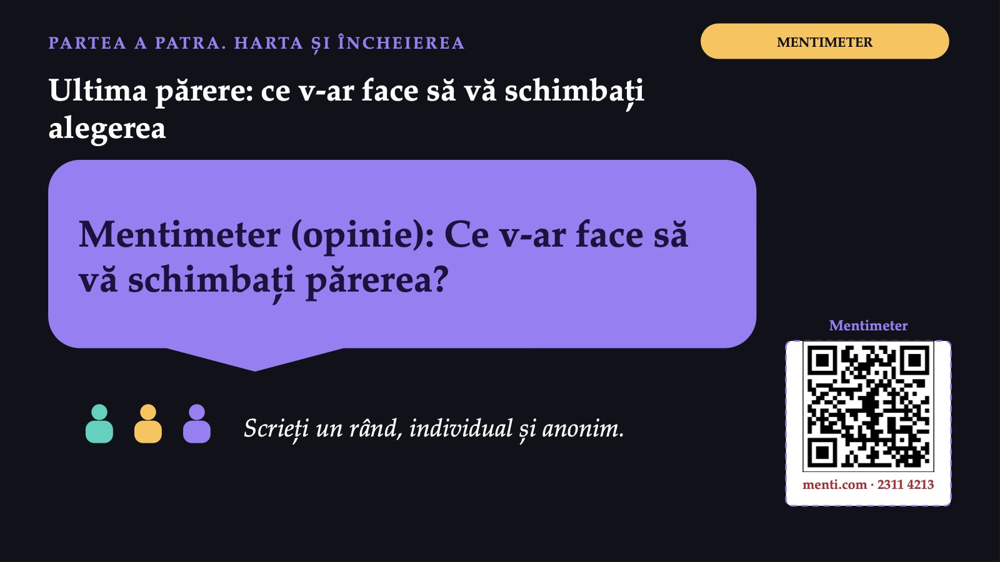
40 / 47A susține o alegere înseamnă a spune și ce ar trebui să se întâmple ca să vă schimbați părerea. Scrieți un rând.
Ce a ales spitalul în 2018
![PARTEA A PATRA. HARTA ȘI ÎNCHEIEREA Ce a ales spitalul în 2018 Oftalmologia și ORL nu apar în capitolul obiectivelor. La saloane, obiectivele păstrează creșterea confortului hotelier, prin dotări și mobilier, cu termen și responsabil, dar plata nu mai apare. Specialitățile noi din ambulatoriu apar o singură dată în tot planul, la pagina 21, printre priorități. În schimb, obiectivele cuprind reabilitarea ambulatoriului, pe termen lung, și atragerea de fonduri europene pentru modernizare și pentru o secție de recuperare medicală, care nu se afla printre cele patru variante. Din cursul 7: diapozitivele 31–33](diapozitive/C08/041.jpg) 41 / 47
41 / 47Punem acum lângă tablă planul spitalului. Faptele le știți de la cursul trecut; azi le citim cu ochii celui care evaluează.
?
![PARTEA A PATRA. HARTA ȘI ÎNCHEIEREA Citite cu instrumentele de azi, rândurile planului arată un pas lipsă ? Trei dintre cele patru variante stăteau în căsuța oportunităților, unde, după manual, ar fi trebuit să stea evenimente externe. Nu am găsit în plan o listă de verificare și nicio pagină în care o variantă să fie pusă lângă punctele slabe ale spitalului. Între analiză și obiective nu se vede pasul evaluării. Nu știm dacă el s-a făcut și nu a fost scris sau dacă nu s-a făcut deloc; planul nu spune.](diapozitive/C08/042.jpg) 42 / 47
42 / 47Nu putem afirma că spitalul nu și-a evaluat variantele. Lipsa evaluării din document nu dovedește că ea nu s-a făcut. Nu putem spune nici de ce oftalmologia și ORL au rămas în afara obiectivelor.
Ce se vede azi și ce a văzut evaluatorul
![PARTEA A PATRA. HARTA ȘI ÎNCHEIEREA Ce se vede azi și ce a văzut evaluatorul Pe situl spitalului, în noiembrie 2026, apar un medic primar ORL în secția de chirurgie și un ambulatoriu cu două cabinete. În 2023, orașul a semnat un contract de finanțare pentru ambulatoriu prin Planul Național de Redresare și Reziliență (PNRR), programul de investiții finanțat de Uniunea Europeană. Sursele consultate nu spun ce s-a realizat. Titularul cursului a evaluat un plan strategic de spital. Partea cu variantele era o „listă de dorințe”, iar după aceea „s-a făcut ce a venit cu bani”. Instrumentele de azi sunt felul în care o listă de dorințe devine o alegere. Din cursul 7: diapozitivele 35–38](diapozitive/C08/043.jpg) 43 / 47
43 / 47Lista de verificare leagă fiecare variantă de analiză. Matricea o leagă de o problemă externă și de un avantaj sau de un dezavantaj. Harta o leagă de celelalte variante.
Înapoi la întrebarea de la început: trei probe ale unei alegeri
![PARTEA A PATRA. HARTA ȘI ÎNCHEIEREA Înapoi la întrebarea de la început: trei probe ale unei alegeri Cum îți dai seama că o variantă dintr-un plan este o alegere și nu o dorință? O variantă care trece cele trei probe poate fi totuși greșită. Judecata rămâne judecată. Prima probă: arată spre un rând din analiza externă și spre unul din analiza internă. A doua probă: stă într-o căsuță a matricei, nu singură, ci alături de condiția ei. A treia probă: își are locul pe hartă, cu calea și cu poziționarea ei.](diapozitive/C08/044.jpg) 44 / 47
44 / 47Cine susține o asemenea variantă poate spune de ce, iar cine o respinge știe ce argument are de răsturnat.
Ce rămâne și ce faceți diferit de luni
![PARTEA A PATRA. HARTA ȘI ÎNCHEIEREA Ce rămâne și ce faceți diferit de luni Alegerea strategică este o judecată argumentată: instrumentele rânduiesc datele și gândirea, dar nu dau răspunsul. Când citiți o analiză SWOT, verificați întâi dacă în căsuța oportunităților stau evenimente externe sau acțiuni ale organizației. Când susțineți o variantă, spuneți spre ce rând din analiză arată și ce condiție are. Când primiți o listă de puncte tari și slabe, cereți ierarhia: care două sau trei hotărăsc. Când planul echipei este gata, desenați-i harta, cât mai simplu, și căutați coloana goală.](diapozitive/C08/045.jpg) 45 / 47
45 / 47Acestea sunt patru obiceiuri de lucru. Le puteți folosi de mâine, la planul echipei voastre.
Kahoot:
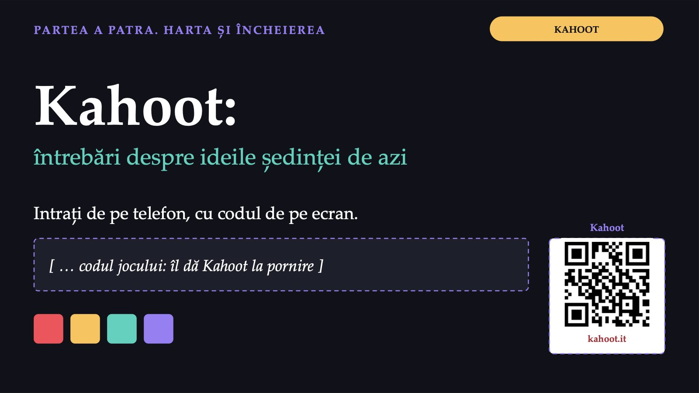
46 / 47Încheiem cu câteva întrebări despre ideile de azi, nu despre cifre. Dacă nu mai avem timp, le găsiți pe pagina ședinței, ca recapitulare.
Ce urmează
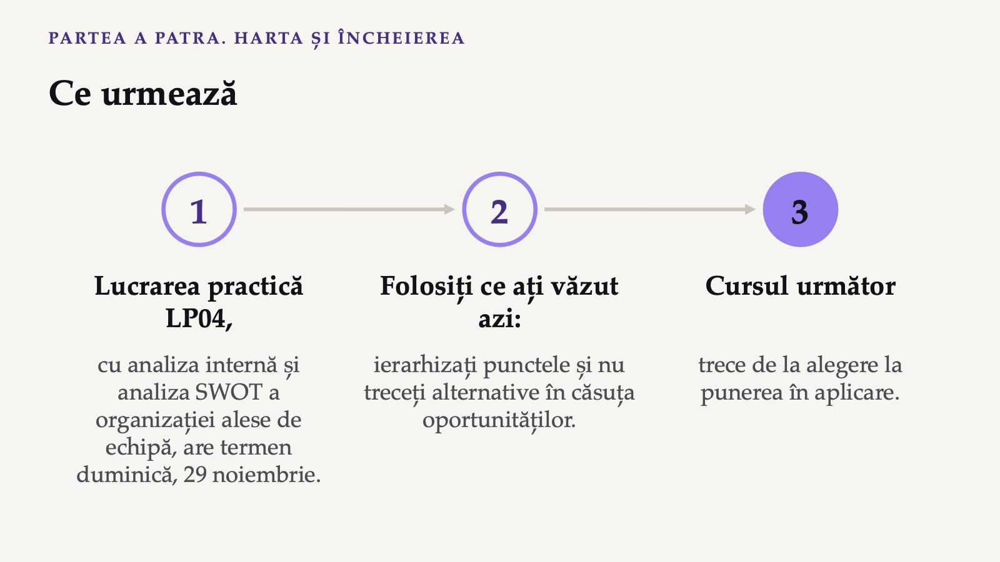
47 / 47Planul strategic al echipei, la sfârșitul semestrului, este judecat și după legătura dintre analiză, alternativa aleasă și felul în care alegerea este argumentată.
Săgeți sau spațiu: navigare · O: vedere de ansamblu · N: notele prezentatorului · F: ecran complet · Esc: închidere